Aplikasi PT. Akses Net
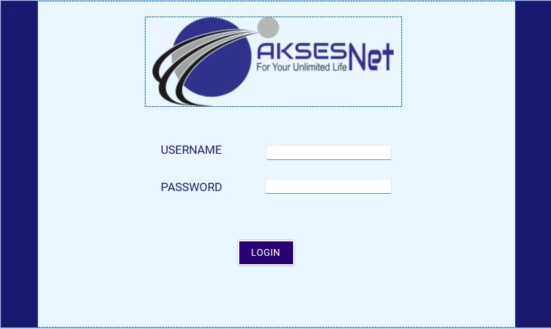
 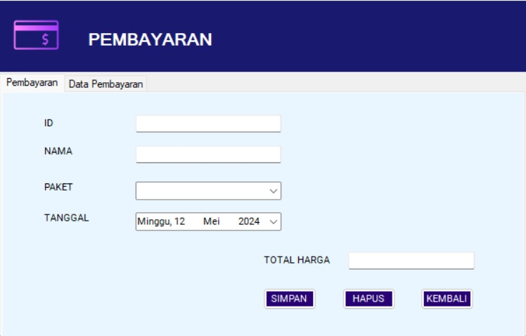
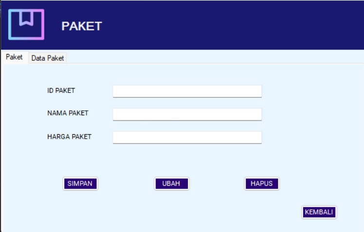
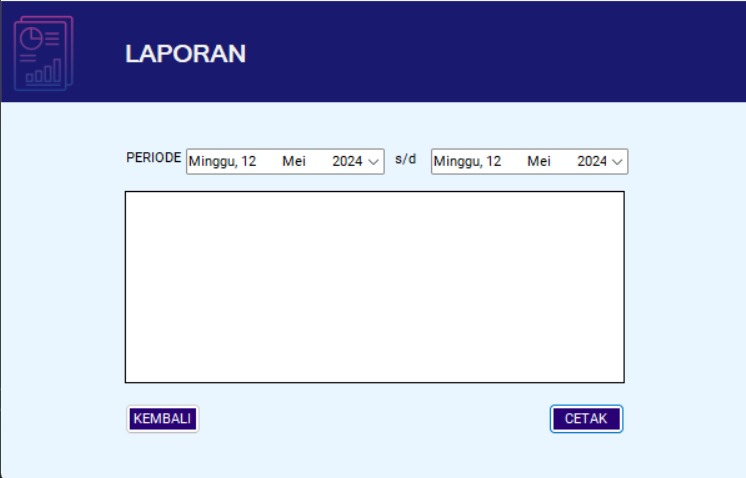
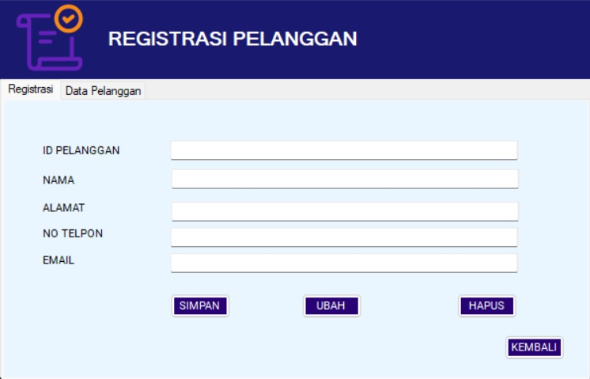
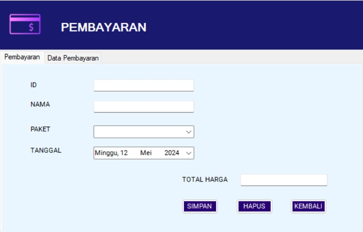
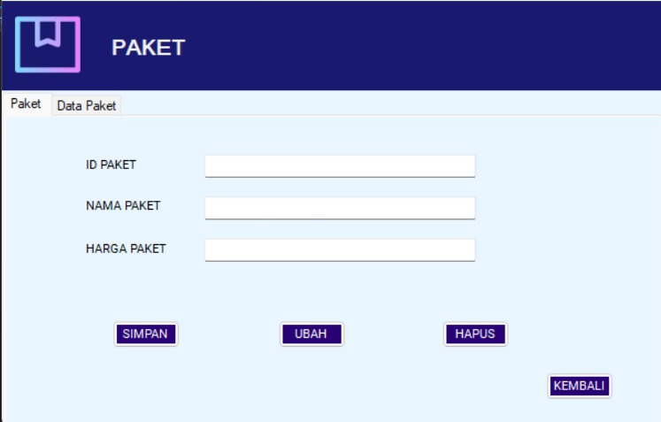
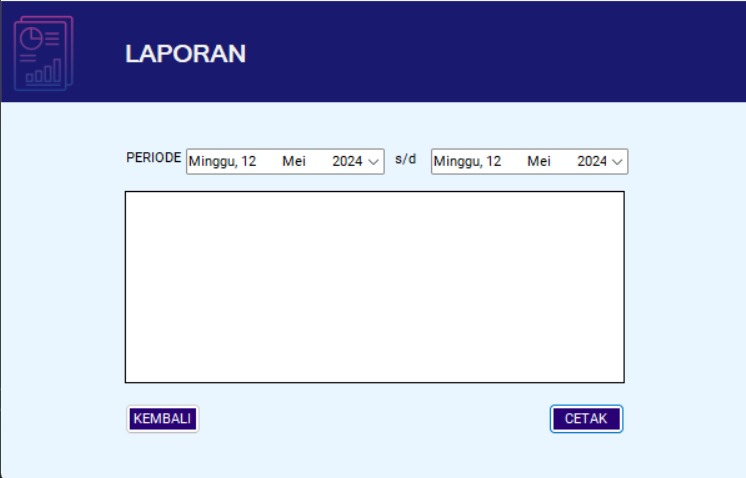
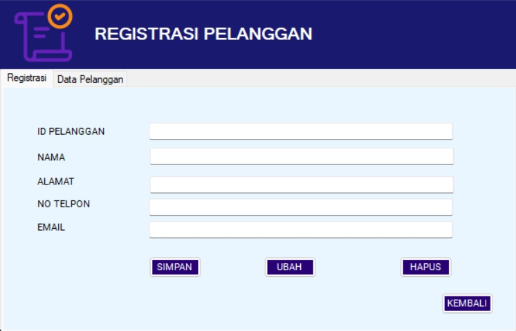
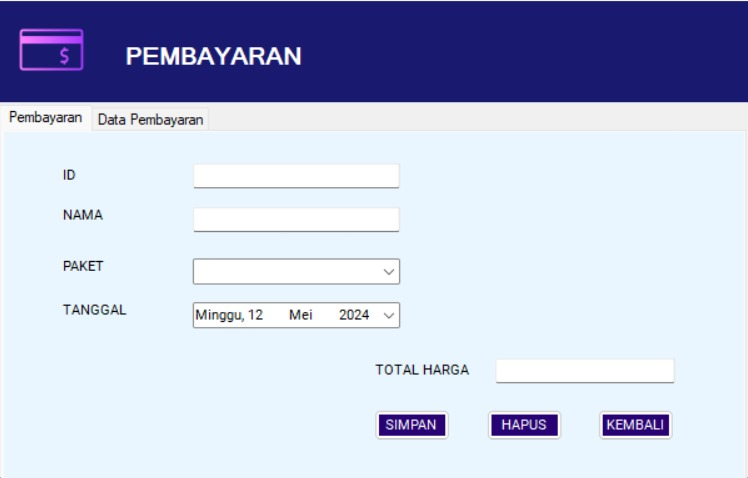
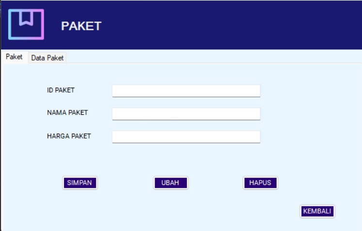
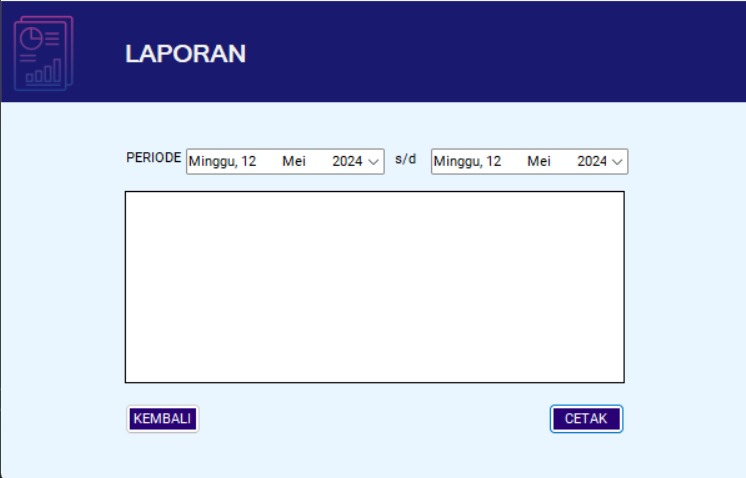
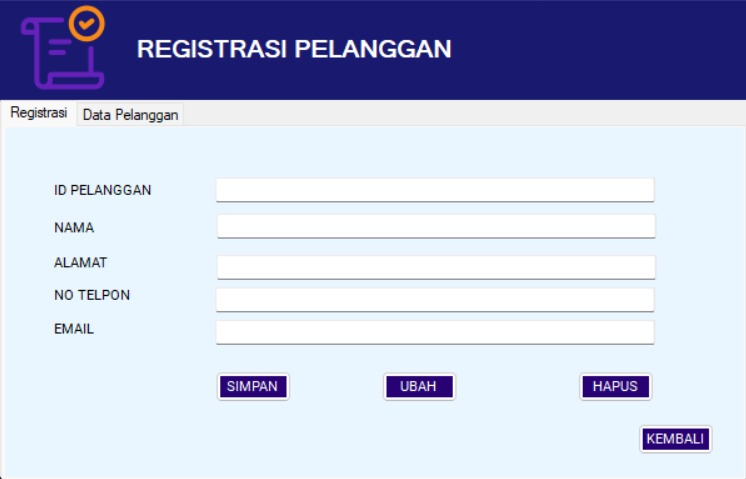
Aplikasi Akses Net adalah sebuah perangkat lunak yang berfungsi sebagai sistem pencatatan transaksi antara PT. Akses Net Tribuana dan pelanggan atau pengguna WiFi. Dikembangkan menggunakan bahasa pemrograman C# dan berbasis desktop, aplikasi ini didesain dengan tujuan untuk mempermudah proses pencatatan transaksi, termasuk pembayaran layanan WiFi, manajemen pelanggan, dan pencatatan transaksi keuangan secara efisien. Dengan demikian, aplikasi ini menjadi solusi yang handal dan efektif dalam mendukung aktivitas bisnis PT. Akses Net dalam mengelola layanannya.